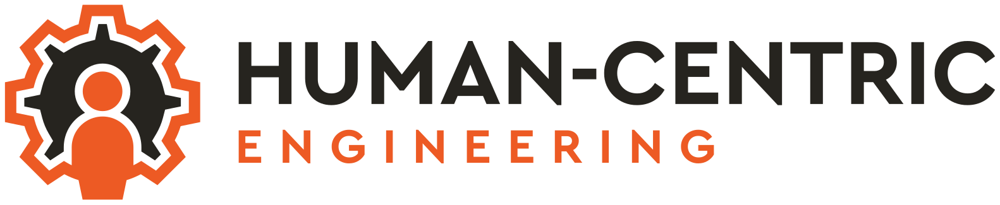

Our open-source, production-ready base for agentic software. Agents, capabilities, knowledge, workflows, evaluation and governance, with orchestration built in.
A conversational questionnaire platform. A natural dialogue in place of form-filling. An agent extracts, infers and synthesises answers, with confidence and provenance.
A framework that turns the foundation's primitives into guided, personalised, expert-led apps. First in genre, a coaching journey built with a partner venture.
We're building things that weren't possible a year ago, on a foundation that's production-ready from day one. The possibilities on top of it are effectively endless.
Software engineering is a deeply human endeavour.
Humans and AI, working symbiotically.
Fast iteration, without giving up craft.
Have an idea? We'd like to hear from you.
Get in touchA studio by Simon Holmes & John Durrant.